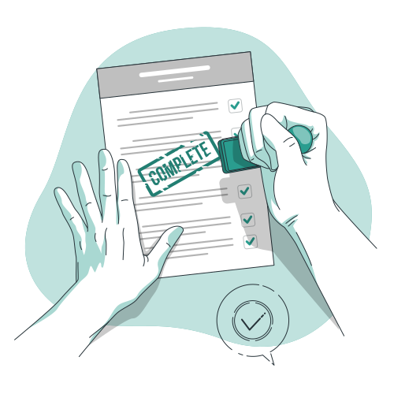

Why self-development Matters.

Self development is when someone develops to their full potential or capabilities.
I define your full potential as being the best “you” that you can be. Doing
the absolute
best you can do.
Self-development is the process of bettering yourself to a higher degree

That being said we now have our first objective completed
You can start your personal development skills by
taking classes, learning from the people
around
you,
gaining new talents and improving upon existing ones.
Follow these guidelines to develop
yourself
personally:
- Overcome your fears.
Fear can prevent you from growing and progressing. If you are afraid of public speaking, for instance, take a class or join a group that helps people become better public speakers.If you are afraid of taking risks, find a mentor who can help you make good decisions and build your confidence.Grow and learn by trying things you might not be comfortable doing. If you are shy, try starting a conversation or introducing yourself to new people at a reception or workshop. - Read.
Reading can expand your knowledge and vocabulary and keep you informed. It can also stimulate your mind and can improve your critical thinking skills. Try setting a goal to read at least one educational or motivational article a day, or one book a month. - Learn something new.
Learn a new skill or topic, whether you do it yourself or sign up for a class. You might, for instance, take courses to learn another language, a new software program or how to write code. Consider enrolling in a coding class or watching a video on how to speak Spanish.
Second objective complete.

NB: The other names for self-development are self-help and personal growth.
Personal growth is important because it gives you the tools you need to thrive in an ever-changing world.
it makes you equipped with the essential skills to take on the world and it's challenges
self-development is important if you want to have:
- Career success
- Long-term financial success
- Motivation and productivity
- A healthy mind, body and spirit
- A feel of happiness, positivity and wellbeing
Final objective Complete